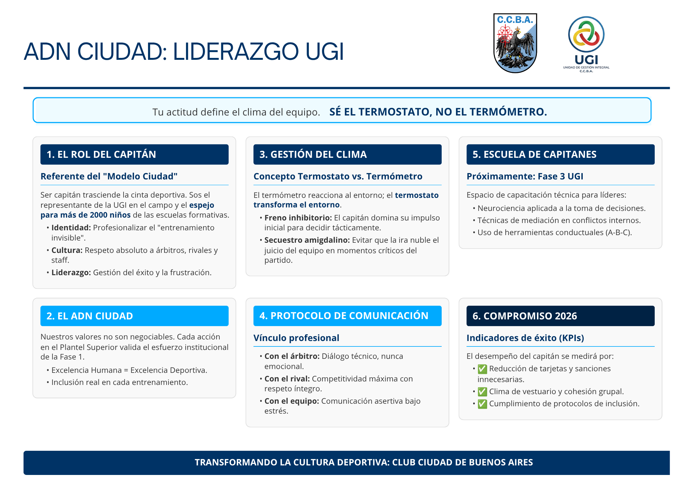

Entrenamiento Mental
Desde la UGI impulsamos este programa para profesionalizar el "entrenamiento invisible".
- Capacitar a profesores: Evolucionar de instructores a facilitadores neurocognitivos.
- Estrategias de integración: Basadas en DUA para una inclusión real.
- Manejo de emociones: Aplicar psicología cognitivo-conductual en el deporte.
ADN Ciudad: Liderazgo UGI

Ser capitán es un servicio. Formamos líderes que sean el Termostato del Equipo, regulando el clima bajo estrés.
- 3 R de la Regulación: Reconocer, Regular y Refocalizar.
- Comunicación Profesional: Diálogo técnico con árbitros y asertividad con el equipo.
Cultura del Jugador: Qué Sí y Qué No

Exigimos compañerismo innegociable: respaldar al compañero en el error y grandeza ante el rival.